MANUAL TRANSMISSION UNIT > REASSEMBLY |
| 1. INSTALL OUTPUT SHAFT ASSEMBLY |
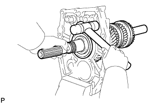 |
Install the output shaft by lightly tapping on the back side of the intermediate plate with a plastic-faced hammer.
| 2. INSTALL OUTPUT SHAFT BEARING SHAFT SNAP RING |
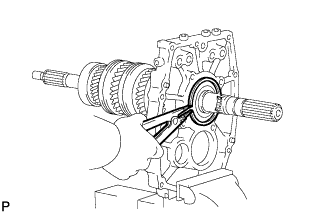 |
Using a snap ring expander, install the snap ring to the output shaft bearing.
| 3. INSTALL NO. 2 SYNCHRONIZER RING |
Install the No. 2 synchronizer ring to the input shaft.
| 4. INSTALL INPUT SHAFT ASSEMBLY |
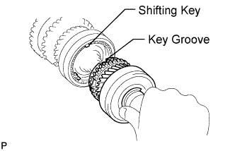 |
Install the input shaft to the output shaft.
Install the clutch hub and confirm that the gear and synchronizer ring move smoothly.
| 5. INSTALL COUNTER GEAR |
Install the counter gear to the intermediate plate.
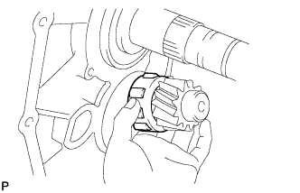 |
Install the center bearing to the counter gear.
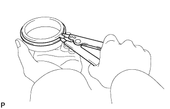 |
Using a snap ring expander, install the snap ring to the outer race.
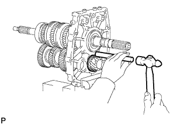 |
Using a brass bar and hammer, lightly tap the bearing outer race uniformly to install it.
| 6. INSTALL OUTPUT SHAFT REAR BEARING (MTM) RETAINER |
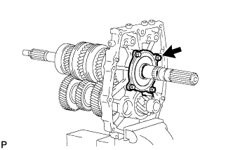 |
Install the output shaft rear bearing retainer to the intermediate plate with the 4 bolts.
| 7. INSTALL NO. 1 TRANSMISSION HUB SLEEVE |
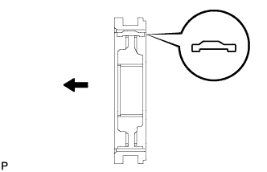 |
Apply a light coat of gear oil to the sleeve and hub.
Install the No. 1 transmission hub sleeve and 3 shifting keys to the No. 4 transmission clutch hub.
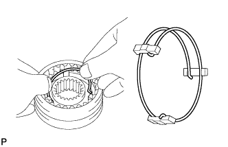 |
Insert the 2 springs under the shifting keys.
| 8. INSTALL REVERSE GEAR BEARING |
Coat the reverse gear bearing with gear oil, and install it to the reverse gear.
| 9. INSTALL REVERSE SYNCHRONIZER RING SET |
Coat the reverse synchronizer ring set with gear oil, and install it to the reverse gear.
| 10. INSTALL REVERSE GEAR |
 |
Coat the reverse gear with gear oil, and install it to the output shaft.
| 11. INSTALL NO. 4 TRANSMISSION CLUTCH HUB |
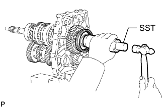 |
Using SST and a hammer, install the No. 4 transmission clutch hub.
Install the clutch hub and confirm that the gear and synchronizer ring move smoothly.
| 12. INSTALL NO. 3 TRANSMISSION CLUTCH HUB SHAFT SNAP RING |
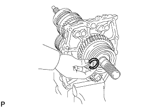 |
Select a new snap ring that will allow minimum clearance.
| Part No. | Thickness | Mark |
| 90520-34018 | 2.40 to 2.45 mm (0.0945 to 0.0965 in.) | A |
| 90520-34019 | 2.45 to 2.50 mm (0.0965 to 0.0984 in.) | B |
| 90520-34020 | 2.50 to 2.55 mm (0.0984 to 0.100 in.) | C |
| 90520-34021 | 2.55 to 2.60 mm (0.100 to 0.102 in.) | D |
| 90520-34022 | 2.60 to 2.65 mm (0.102 to 0.104 in.) | E |
| 90520-34023 | 2.65 to 2.70 mm (0.104 to 0.106 in.) | F |
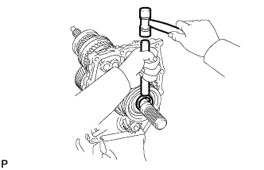 |
Using a brass bar and hammer, install the snap ring to the output shaft.
| 13. INSPECT REVERSE GEAR THRUST CLEARANCE |
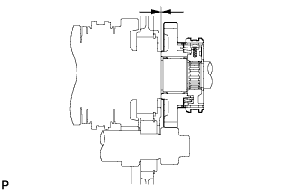 |
Using a feeler gauge, measure the reverse gear thrust clearance.
| 14. INSTALL NO. 2 GEAR SHIFT FORK |
Install the No. 2 gear shift fork.
| 15. INSTALL NO. 2 GEAR SHIFT FORK SHAFT |
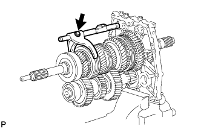 |
Install the No. 2 gear shift fork shaft to the No. 2 gear shift fork and intermediate plate with the bolt.
| 16. INSTALL NO. 1 GEAR SHIFT FORK |
Install the No. 1 gear shift fork.
| 17. INSTALL NO. 1 GEAR SHIFT FORK SHAFT |
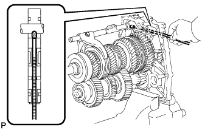 |
Using a magnetic finger, install the interlock pin to the intermediate plate.
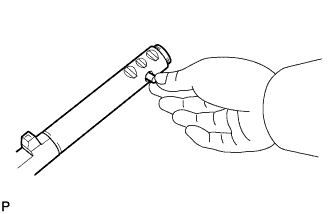 |
Apply MP grease to the interlock pin.
Install the interlock pin to the No. 1 gear shift fork shaft.
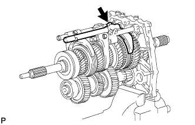 |
Install the No. 1 gear shift fork shaft to the No. 2 gear shift fork and intermediate plate with the bolt.
| 18. INSTALL NO. 3 GEAR SHIFT FORK |
Install the No. 3 gear shift fork.
| 19. INSTALL NO. 3 GEAR SHIFT FORK SHAFT |
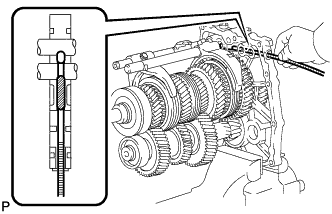 |
Using a magnetic finger, install the interlock pin to the intermediate plate.
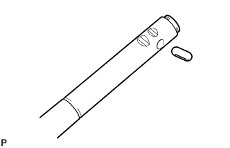 |
Apply MP grease to the interlock pin.
Install the interlock pin to the No. 3 gear shift fork shaft.
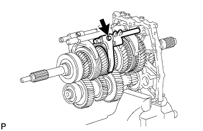 |
Install the No. 3 gear shift fork shaft to the No. 3 gear shift fork and intermediate plate with the bolt.
| 20. INSTALL REVERSE SHIFT FORK |
Install the reverse shift fork.
| 21. INSTALL NO. 4 GEAR SHIFT FORK SHAFT |
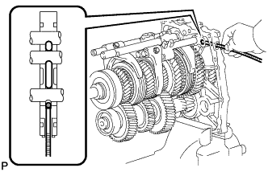 |
Using a magnetic finger, install the ball to the intermediate plate.
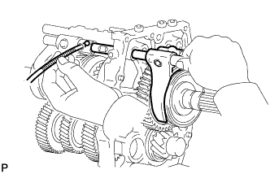 |
Using a magnetic finger, install the ball to the reverse shift head.
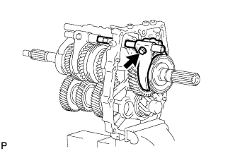 |
Install the No. 4 gear shift fork shaft to the reverse gear shift fork and intermediate plate with the bolt.
| 22. INSTALL SHIFT FORK SHAFT SNAP RING |
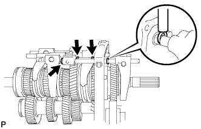 |
Using a brass bar and hammer, install the 4 snap rings.
| 23. INSTALL SHIFT DETENT BALL PLUG |
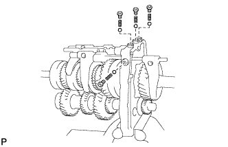 |
Install the 4 balls and 4 springs to the intermediate plate.
Apply adhesive to 2 or 3 threads of the 4 detent ball plugs.
Using a T40 "TORX" socket wrench, install the 4 detent ball plugs.
| 24. INSTALL MANUAL TRANSMISSION CASE RECEIVER |
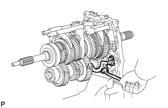 |
Install the transmission case receiver to the intermediate plate with the 3 bolts.
| 25. INSTALL INTERMEDIATE PLATE STRAIGHT PIN |
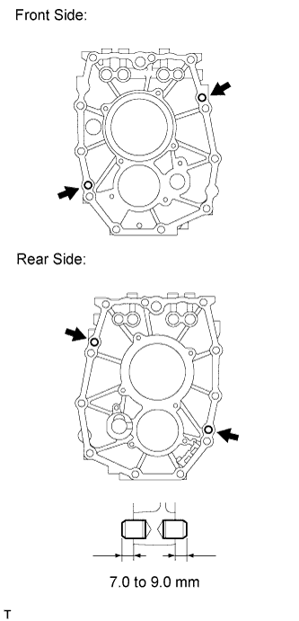 |
Using a plastic-faced hammer, tap 4 new straight pins into the intermediate plate.
| 26. INSTALL TRANSFER ADAPTER STRAIGHT PIN |
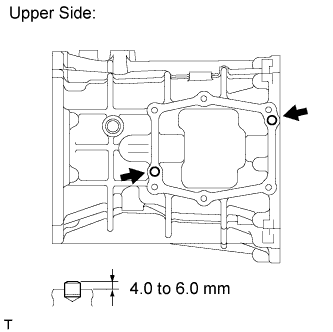 |
Using a plastic-faced hammer, tap 2 new straight pins into the transmission case.
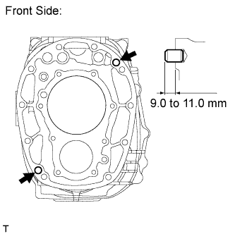 |
Using a plastic-faced hammer, tap 2 new straight pins into the transmission case.
| 27. INSTALL NO. 1 OIL RECEIVER PIPE (MTM) |
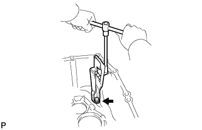 |
Install the oil receiver pipe to the transmission case with the 2 bolts.
| 28. INSTALL MANUAL TRANSMISSION CASE SUB-ASSEMBLY |
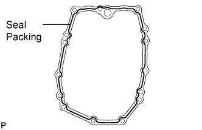 |
Apply seal packing to the transmission case, as shown in the illustration.
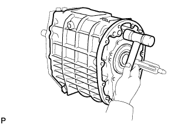 |
Install the transmission case by lightly tapping it into place with a plastic-faced hammer.
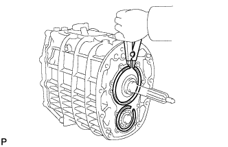 |
Using a snap ring expander, install the 2 snap rings to the counter gear and input shaft.
| 29. INSTALL REVERSE IDLER GEAR SHAFT WOODRUFF KEY |
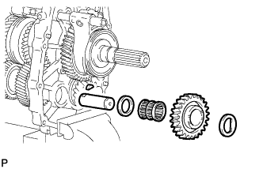 |
Install the woodruff key to the reverse idler gear shaft.
| 30. INSTALL REVERSE IDLER GEAR SHAFT |
Install the reverse idler gear shaft to the intermediate plate.
| 31. INSTALL REVERSE IDLER THRUST WASHER |
Install the thrust washer to the reverse idler gear shaft.
| 32. INSTALL REVERSE IDLER GEAR BUSH OR BEARING |
Install the bearing to the reverse idler gear shaft.
| 33. INSTALL REVERSE IDLER GEAR |
Install the reverse idler gear to the reverse idler gear shaft.
| 34. INSTALL NO. 2 REVERSE IDLER THRUST WASHER |
Install the thrust washer to the reverse idler gear shaft.
| 35. INSTALL TRANSMISSION MAGNET |
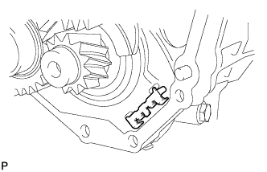 |
Install the transmission magnet to the intermediate plate.
| 36. INSTALL MANUAL TRANSMISSION OIL STRAINER SUB-ASSEMBLY |
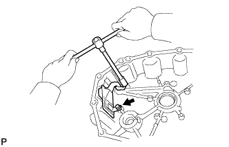 |
Install a new O-ring to the oil strainer.
Apply a light coat of gear oil to the O-ring.
Install the oil strainer to the transfer adapter with the 2 bolts.
| 37. INSTALL TRANSFER ADAPTER STRAIGHT PIN AND RING PIN |
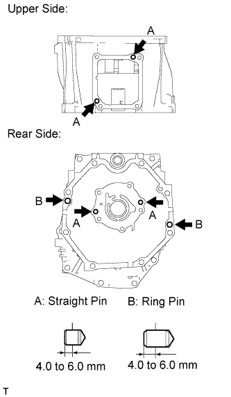 |
Using a plastic-faced hammer, tap in 4 new straight pins and 2 new ring pins to the transfer adapter.
| 38. INSTALL TRANSFER ADAPTER SUB-ASSEMBLY |
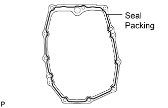 |
Apply seal packing to the transfer adapter, as shown in the illustration.
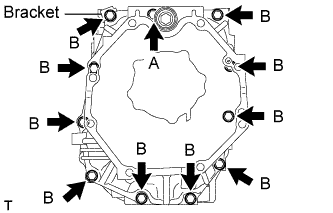 |
Install the transfer adapter and bracket to the transmission case with the 11 bolts.
| Item | Length |
| Bolt A | 110 mm (4.33 in.) |
| Bolt B | 70 mm (2.75 in.) |
| 39. INSTALL TRANSFER ADAPTER PLUG |
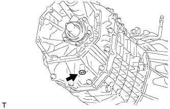 |
Using a T40 "TORX" socket wrench, install the transfer adapter plug to the transfer adapter.
| 40. INSTALL SHIFT AND SELECT LEVER SHAFT |
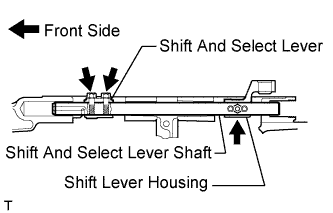 |
Install the shift and select lever, shift lever housing, and shift and select lever shaft to the transmission as shown in the illustration.
Install the 2 bolts to the shift and select lever.
Install the bolt to the shift lever housing.
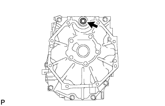 |
Using a 14 mm hexagon wrench, install the interlock hole plug to the transfer adapter.
| 41. INSTALL FRONT BEARING RETAINER (MTM) |
 |
Apply seal packing to the front bearing retainer, as shown in the illustration.
Apply adhesive to 2 or 3 threads of the bolts.
 |
Install the front bearing retainer to the transmission case with the 8 bolts.
| 42. INSTALL TRANSMISSION OIL PUMP COVER |
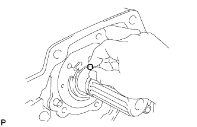 |
Apply MP grease to the straight pins.
Install the 2 straight pins.
Install a new O-ring to the oil pump cover.
Align the oil pump drive rotor groove with the straight pin, and install the oil pump cover to the transfer adapter.
Apply adhesive to 2 or 3 threads of the bolts.
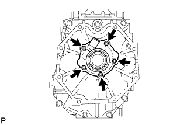 |
Install the oil pump cover to the transfer adapter with the 5 bolts.
| 43. INSTALL NO. 1 REVERSE RESTRICT PIN |
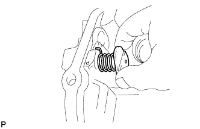 |
Install the No. 1 reverse restrict pin and spring to the shift lever retainer.
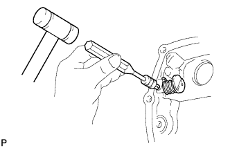 |
Using a 5 mm pin punch and hammer, tap a new slotted pin into the shift lever retainer.
| 44. INSTALL FLOOR SHIFT CONTROL SHIFT LEVER RETAINER SUB-ASSEMBLY |
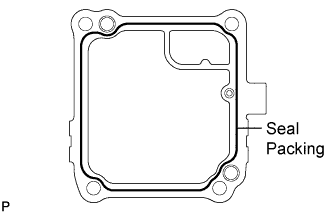 |
Apply seal packing to the shift lever retainer, as shown in the illustration.
Apply adhesive to 2 or 3 threads of the bolts.
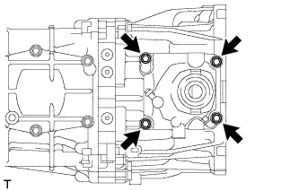 |
Install the shift lever retainer to the transfer adapter with the 4 bolts.
| 45. INSTALL REVERSE RESTRICT PIN ASSEMBLY |
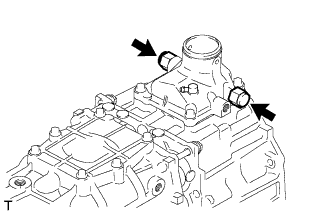 |
Apply adhesive to 2 or 3 threads of the reverse restrict pins.
Install the 2 reverse restrict pins to the shift lever retainer.
| 46. INSTALL CONTROL SHAFT COVER |
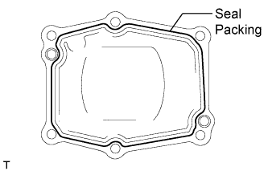 |
Apply seal packing to the control shaft cover, as shown in the illustration.
Apply adhesive to 2 or 3 threads of the bolts.
Install the control shaft cover to the manual transmission with the 6 bolts.
| 47. INSTALL SHIFT POSITION SWITCH (for 1VD-FTV) |
Using SST, install a new gasket and the shift position switch to the transmission.
Connect the wire harness clamp.
| 48. INSTALL BACK-UP LIGHT SWITCH ASSEMBLY |
Using SST, install a new gasket and the back-up light switch to the transmission.
Connect the wire harness clamp.
| 49. INSTALL MANUAL TRANSMISSION CASE PLUG |
Using a T55 "TORX" socket wrench, install a new gasket and the manual transmission case plug to the transmission.
| 50. INSTALL DRAIN PLUG |
Install a new gasket and the drain plug to the manual transmission.
| 51. TEMPORARILY INSTALL FILLER PLUG |
Temporarily install a new gasket and the filler plug to the manual transmission.
| 52. INSTALL CLUTCH HOUSING |
Apply adhesive to 2 or 3 threads of the bolts labeled A only.
Install the clutch housing with the 10 bolts.
| Item | Length |
| Bolt A | 45 mm (1.77 in.) |
| Bolt B | 45 mm (1.77 in.) |
| Bolt C | 35 mm (1.38 in.) |
| 53. INSTALL TRANSMISSION BREATHER SUB-ASSEMBLY (for 1VD-FTV) |
Connect the breather hose with the clamp.
Install the wire harness clamp.
| 54. INSTALL TRANSMISSION BREATHER SUB-ASSEMBLY (for 1GR-FE) |
Connect the breather hose with the clamp.